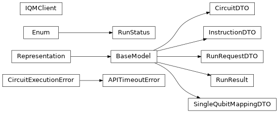

cirq_iqm.iqm_client¶
Client for connecting to the IQM quantum computer server interface.
Classes
|
DTO for quantum circuits. |
|
Provides access to IQM quantum computers. |
|
DTO for operations constituting a quantum circuit. |
|
Request for an IQM quantum computer to execute a circuit. |
|
Results of a circuit execution. |
|
Status of a task |
|
Mapping of a logical qubit to a physical qubit. |
Exceptions
Exception for when executing a task on the server takes too long. |
|
Something went wrong on the server. |
Inheritance
